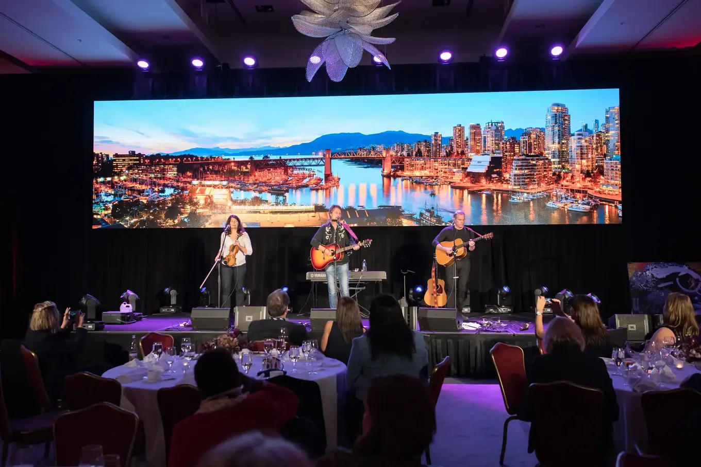

Видеооборудование
Современные видеоэкраны превратят ваш ресторан в атмосферное пространство, где гости не только наслаждаются кухней, но и получают визуальное удовольствие. Наши профессиональные решения позволяют транслировать меню с аппетитными изображениями блюд, рекламировать акции и специальные предложения, демонстрировать мероприятия и создавать уникальную атмосферу в зале.
Выбрать формат